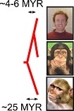
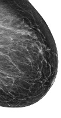

Research
We study how patterns of gene expression are encoded in mammalian DNA sequences, and how these ‘regulatory codes’ contribute to evolution, development, and disease. Our specialty is developing statistics and machine-learning approaches to analyze ‘functional genomic’ sequencing data, prepared using DNase-I-seq, PRO-seq, RNA-seq, and related assays. Our tools borrow a wide variety of ideas from the fields of statistics and machine-learning, including recent uses of hidden Markov models, support vector machines, and artificial neural networks.
Ongoing projects in the lab study the role of gene regulation in the following biological systems:
 We have used PRO-seq to map the location of RNA polymerases in CD4+ T-cells isolated from humans, chimpanzees, and rhesus macaques. These maps provide a rich source of data profiling both expression levels, and the location and activity of regulatory elements across 25 million years of primate evolution. Using this data, we hope to understand how differences in gene expression arise from changes in DNA sequence, and how evolutionary pressures have shaped the human adaptive immune system during the last 25 million years.
Naive CD4+ T-cells differentiate into a variety of effector subtypes which are collectively responsible for initiating and controlling adaptive immune responses. T-cells select a specific lineage based on stereotypical expression patterns of ‘master regulator’ transcription factors (e.g., STAT6, GATA3, etc.). Our objective is to understand how two closely related CD4+ T-cell subtypes, TH17 and TREG, are polarized to a particular cell fate.
 Breast cancer is fundamentally a disease of gene regulation, with more than 70% of tumors initially dependent on the transcription factor estrogen receptor alpha (ERα) for growth and proliferation. Understanding how breast cancers originate and progress requires mapping loci that control gene expression in hundreds of primary human tumor samples. We have begun an ambitious project to map the location and activity of functional elements in primary breast and matched normal tissue samples.